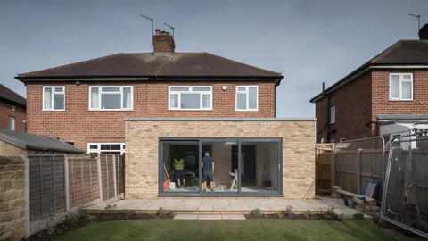
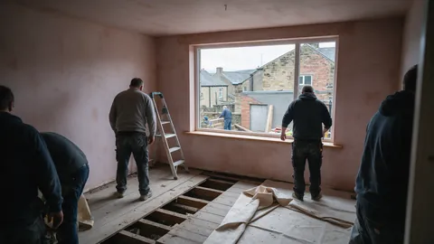
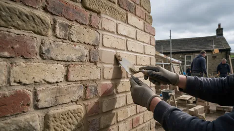
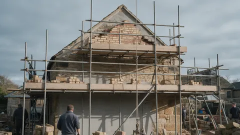
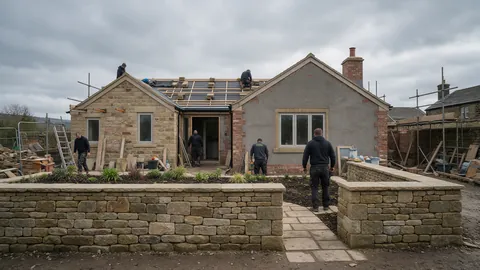
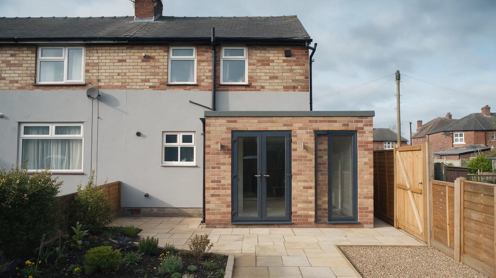

Our work
Jobs like yours.
Quarrigg is a fictional firm, so none of this is a real job. The pictures were generated for this demo to show the kind of work and the stage it gets photographed at.
9 jobs shown

Generated photoSingle storey rear extensionHalifax · sample Generated photoExtension shell going upBrighouse · sample
Generated photoExtension shell going upBrighouse · sample Generated photoInside the finished shellElland · sample
Generated photoInside the finished shellElland · sample Generated photoLoft conversion, structural stageHuddersfield · sample
Generated photoLoft conversion, structural stageHuddersfield · sample Generated photoKnock through with a steel beamSowerby Bridge · sample
Generated photoKnock through with a steel beamSowerby Bridge · sample
Generated photoBack bedroom stripped and replasteredHalifax · sample
Generated photoRepointing an old wallBrighouse · sample
Generated photoGable end rebuiltHuddersfield · sample
Generated photoNew stone garden wallElland · sample

Illustrative, not a real job. Two generated pictures of the same house, one before and one after.
Before and after
Same house, a few months apart.
The useful thing about a back elevation is that nothing else changes around it, so you can see exactly what the work bought.
On a real site this is where a builder's own before and after shots would go, with the town and the month under each one.
Start a quoteWant one like these?
Tell us the rough size and where you are. We will come out and tell you what it actually involves.